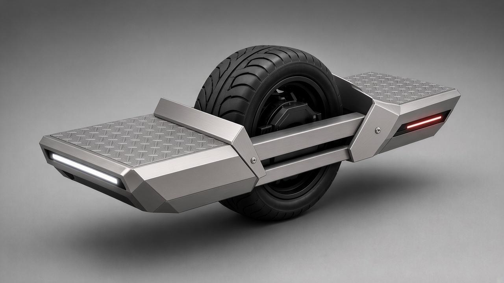
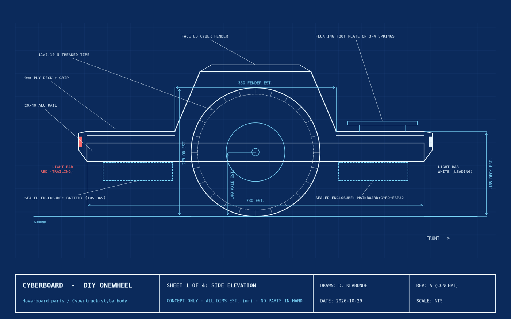
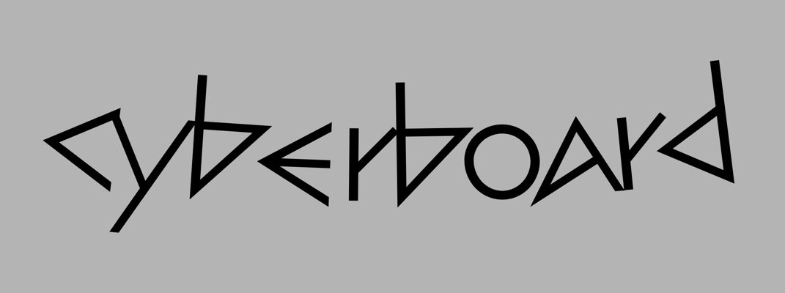

CyberBoard
A DIY angular one-wheel electric board built from a used hoverboard.
Lead designer & builder · Oct 2026 – present
Problem
Build a rideable single-wheel board with an angular, brushed-metal look on a tight budget and basic tools.
Constraints
- Budget $150–200 total
- Tools: older 3D printer (PLA), FreeCAD, household drill
- Serviceable: top plates on screws into rivet nuts
- Treaded tire for wet roads and snow
Key result
Not built yet. Donor board selected; tire ordered on arrival
STAR
Situation
Commercial one-wheel boards cost far more than my budget.
Task
Design and build one from a ~$40 used 6.5" 36V hoverboard: parts, design decisions and fabrication.
Action
- Wheel: 11x7.10-5 treaded go-kart tire with the two hub motors machined to act as the rim
- Frame: angular brushed-aluminum rails, 1/8" aluminum diamond-plate foot decks
- Lighting: ESP32 reads a hall sensor (MPU6050 backup) so the leading LED bar is white and trailing is red; 36V→5V buck
- Faceted bent-aluminum splash guards; custom rail sticker
Result
No measurements yet. Success criteria: rides stably, LEDs switch correctly with direction, stays within budget, top plates removable for service.
Design decisions
| Decision | Options / choice | Tradeoff |
|---|---|---|
| Hoverboard donor | Reuse motors, battery and controller vs buying parts | Far cheaper; tied to stock electronics |
| Treaded tire | Treaded vs slick go-kart tire | Better wet/snow grip; ice still needs studs |
| Screws into rivet nuts | Serviceable top plates vs riveted | More parts, but easy access to electronics |
Testing & iteration
- Planned: bench-test donor motors and sensor
- Planned: verify LED direction switching
- Planned: low-speed ride tests before full speed
Visuals



Next steps
- Measure donor board
- Design foot-trigger plate in FreeCAD
- Rev B blueprints
- Fabricate, wire, test